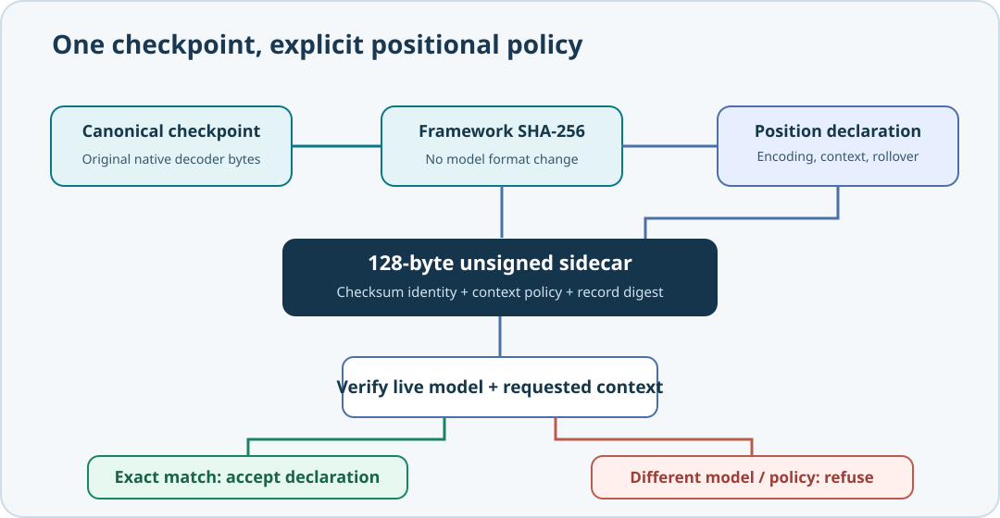

Learning objectives
Understand why positional-encoding strategy is part of a trained language model's identity, distinguish it from the way an application constructs the input context, and use a native C23 compatibility contract before Umicom Studio or another application starts a generation experiment. By the end of this lesson you will be able to explain why a checkpoint cannot simply be relabelled as a rotary-position model and why the same original weights can nevertheless support more than one explicitly named context policy.
1. Two independent decisions: model mathematics and context construction
In earlier lessons the decoder learned a position embedding for each time index. Each token embedding is combined with the learned embedding for its position before attention computes query, key and value representations. These learned weights are part of the model's numerical behaviour, not incidental metadata. Changing the position rule changes what the network computes, even if every other parameter remains equal.
The generation context policy is a separate decision. The historical Umicom generator left-pads short prompts with beginning-of-sequence (BOS) tokens so that the decoder always receives exactly one full context window. The newer prefix session begins with the actual prompt tokens at time zero. Both are valid, explicitly different ways to call the same learned-absolute decoder. Because the token positions differ, the same seed and sampling policy do not guarantee identical outputs between the two modes.
| Question | Learned-position strategy | Context construction |
|---|---|---|
| What does it select? | How the trained decoder represents token positions. | Where the application places its prompt and retained history. |
| Who owns it? | The model architecture, decoder training and checkpoint family. | The generation API chosen by the caller. |
| Can it change without retraining? | Not to a mathematically different scheme without qualification. | Yes, if callers explicitly opt in and compare like with like. |
| How is rolling handled today? | Learned absolute positions require rebasing moved tokens. | Both modes rebuild K/V after context eviction. |
2. Worked example: a native assistant in Umicom Studio
Assume an eight-token native decoder receives the three byte tokens for int. The historical generator evaluates the complete context BOS BOS BOS BOS BOS i n t. The unpadded prefix session starts with i n t. In the first case i is at position 5; in the second it is at position 0. A token embedding combined with position[5] is generally different from one combined with position[0]. That difference can propagate through attention, normalisation, sampling probabilities and eventually generated source text.
The two requests may reference the same 32-byte SHA-256 checkpoint digest because the model's weights have not changed. They must carry different generation-context declarations. Umicom Studio should display or record which mode was used when it presents a model evaluation or comparison. A result without that context is incomplete evidence.

3. The native C23 contract
Batch 77 introduces position_contract.h in the shared Umicom Framework. It does not replace the decoder or the existing generation APIs. It introduces a small declaration that an application may store alongside an approved model checkpoint.
#include "umicom/ai/training/position_contract.h"
/* model is an already-created, caller-owned Framework decoder. */
UmiAiTrainingPositionContract approved = {0};
UmiStatus status = UmiAiTrainingPositionContractBuild(
model, UMI_AI_POSITION_CONTEXT_GROWING_UNPADDED, &approved);
if (status == UMI_STATUS_OK) {
/* This must succeed BEFORE using the prefix generation API. */
status = UmiAiTrainingPositionContractVerify(
model, &approved,
UMI_AI_POSITION_CONTEXT_GROWING_UNPADDED);
}Build asks the canonical checkpoint codec for its actual size and encoded bytes, obtains the model configuration, and computes a SHA-256 digest through the existing Framework hashing service. The decoder is borrowed; the service does not train it, modify its weights, rewrite a checkpoint file or create a second model. After successfully staging the complete declaration, it publishes one caller-owned result.
Verification performs a fresh canonical encoding of the live model. It compares decoder shape, training steps, initial seed, checkpoint byte count, content digest and requested context. A mismatch returns UMI_STATUS_INVALID_STATE. It does not silently switch context policy to make a request pass.
4. Why rotary positions need a different qualified model
Rotary position embeddings (RoPE) modify attention projections according to position-dependent rotations. This differs from adding a trainable absolute-position embedding to the token representation. Many modern decoder architectures employ RoPE, but the existence of that technique does not grant the current Umicom educational model RoPE-compatible parameters. Treating an existing checkpoint as RoPE because the name sounds faster would replace its function with another one.
A future implementation should define a new model-architecture identity, establish how training and inference both compute rotations, explain which cache positions remain valid under a rolling window, and introduce a separately qualified checkpoint family. It must test forward logits, training gradients, checkpoint loading and exact generation semantics before claiming numerical equivalence or a performance benefit. The current sidecar therefore allows only UMI_AI_POSITION_ENCODING_LEARNED_ABSOLUTE and UMI_AI_POSITION_ROLLOVER_REBUILD. An unsupported encoding is refused rather than interpreted heuristically.
5. Practical exercise: classify the compatibility request
| Request | Expected admission result | Reason |
|---|---|---|
| Same approved model, growing-prefix declaration, growing-prefix generation. | Accept if checksum and model identity match. | All declared semantics agree. |
| Same approved model, growing-prefix declaration, BOS-left-padded generation. | Reject. | Context policy differs despite identical weights. |
| Same model architecture, new weight checkpoint, old declaration. | Reject. | Checkpoint SHA-256 differs. |
| Original learned-absolute checkpoint declared as a rotary model. | Reject. | No qualified decoder or checkpoint conversion exists. |
| Unknown metadata version. | Reject. | Compatibility must be explicit, never assumed. |
These decisions are not performance measurements. They are preconditions for reliable evidence. Once a model and context policy are approved, the benchmark from Lesson 75 can measure the corresponding inference paths without mixing incompatible semantics.
6. Review questions
- Why does moving a token from position 5 to position 0 change the current decoder's numerical input?
- Why may two explicitly different context declarations carry identical checkpoint hashes?
- What additional training and checkpoint evidence would a real rotary-position decoder require?
- How would you record model identity and generation policy in an Umicom Studio inference experiment?
- Why is a position-policy check valuable even when the current decoder has only one supported positional strategy?
Key lesson: position representation is learned model mathematics; prompt layout is an inference policy. Identify and verify both before interpreting generated output.